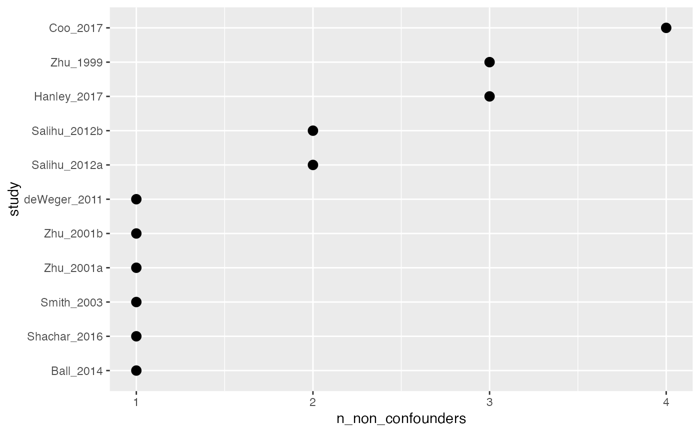

Count and plot non-confounders
count_non_confounders(.df)
plot_non_confounders(.df, ..., geom = ggplot2::geom_col, sort = TRUE)| .df | A data frame, usually the result of |
|---|---|
| ... | Arguments passed to |
| geom | The ggplot2 geom to use |
| sort | Logical. Should the results be sorted? |
a tibble or ggplot
ipi %>%
metaconfoundr() %>%
plot_non_confounders(size = 3, geom = ggplot2::geom_point)
